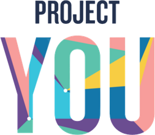

To Do ListTodaysTasksAll
ToDosStaging
Area Habit ModulesCue Cards Quantified SelfQS Dashboard Operating SystemComponentsAutomated
TrackingMaps ▾Mission
ControlDocs
Library v1.0
Scott
Signed in

To Do ListTodaysCollectible stickers that earn themselves from where you have actually been. Nothing to tick by hand: each one is a plain yes or no that your records answer.